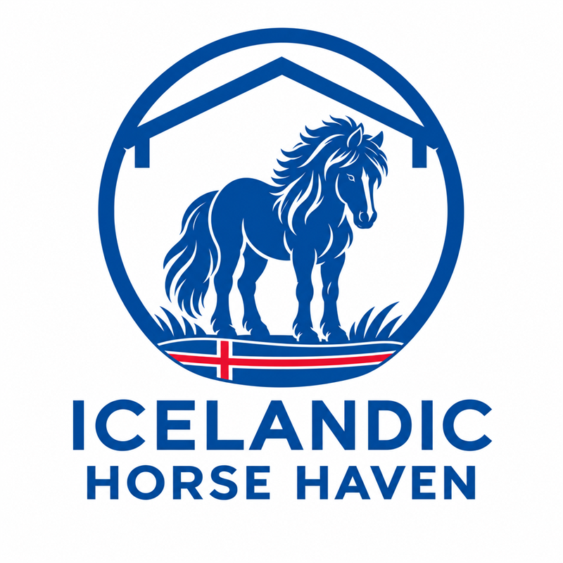

Our Mission
Our mission is to rehabilitate and provide a lifelong safe haven for Icelandic horses in need. We are committed to their physical and emotional well-being with friends, forage and freedom.
Why Icelandic Horse Haven exists
Icelandic horses are hardy, long-lived, and deeply bonded to their herds. Many live well into their twenties and thirties, which means a horse may need more than one home over a lifetime. Owners’ circumstances change: a move, an illness, a loss, or a horse whose care needs have grown beyond what one barn can provide.
The Icelandic horse community has always stepped up for horses in need. Icelandic Horse Haven exists to add one more layer of support, a dedicated place owners and friends of the breed can turn to when a horse’s needs exceed the space, resources, or care available.
Every Icelandic horse deserves a safe home, companionship, and individualized care.

What We Believe
Community first
We build on the generosity of owners, breeders, trainers, and friends of the breed, not in place of it.
Individualized care
No two horses are alike. Care plans reflect each horse’s age, health, history, and temperament.
Companionship
Icelandic horses are herd animals. We make sure every horse in our care has equine company.
Lifelong commitment
Horses we place can always come back to us. Those who can’t be rehomed have a home with us for life.
Respond, Rehabilitate, Retrain, Rehome
Respond
When an owner or community member reaches out, we start by listening. Sometimes the best outcome is helping a horse stay where they are, with resources, referrals, or a connection in the community. When a horse needs a new place to land, we plan the transition together.
Rehabilitate
Every horse is evaluated by a veterinarian and natural horse trimmer. We build a care plan covering nutrition, dental, hooves, and conditions common in the breed, such as sweet itch and metabolic issues.
Retrain
Handlers experienced with Icelandic horses assess each horse’s training and gaits, and help them build confidence and manners at their own pace.
Rehome
We match horses with adopters based on the horse’s needs first. Adopted horses can always return to us, and horses who can’t be rehomed stay with us as sanctuary residents.
Leadership
Icelandic Horse Haven is guided by people who know and love the breed.
Transparency
We believe supporters should be able to see how their gifts are used. As our organization grows, we’ll publish our policies, financial statements, and board meeting minutes here.
Questions in the meantime? Get in touch. We’re happy to talk.